Applicazioni Informatiche del Machine Learning
Lecture 1 Géron Ch. 1–2
What machine learning is, and how we will work
BSc Mathematics of Artificial Intelligence · Third year
48 academic hours · 24 lectures
Textbook: Géron, Hands-On Machine Learning with Scikit-Learn and PyTorch
How to build a machine learning system,
and how to know whether it works.
Aurélien Géron
Hands-On Machine Learning with Scikit-Learn and PyTorch
O’Reilly, 2025
Chapters 1–16, covering Lectures 1–18 and 23–24.
We do not use anyone else’s notebooks — not even the author’s. Every notebook in this course is written for it, and every one of them is complete: nothing in them is wrong on purpose.
| Part | Lectures | What |
|---|---|---|
| I · Tabular data and classical models | 1–8 | regression, classification, trees, ensembles, PCA, clustering |
| II · Neural networks | 9–11 | from the perceptron to PyTorch to deep training |
| III · Computer vision | 12–14 | convolution, transfer learning, detection |
| IV · Sequences and language | 15–18 | forecasting, recurrent networks, text, transformers |
| V · Search and recommendation | 19–22 | retrieval and recommender systems — beyond the book |
| VI · Multimodal models | 23–24 | vision transformers, dual encoders, generation |
One topic per lecture, in the order of the book. Each lecture stands on its own: if you miss one, you read its deck and its notebook and you are caught up.
| min | What |
|---|---|
| 0–10 | where we are, and what today’s method is for |
| 10–30 | the mathematics — the one object the method rests on, derived |
| 30–70 | the method — how it works, its hyperparameters, what breaks it, and a worked example with real numbers |
| 70–85 | variants, and what is actually used in practice |
| 85–90 | the notebook — what is in it and what to do with it |
Each lecture opens by deriving the one object its method rests on. A sample of what is coming:
Eighteen derivations in all, and they are 40% of the written paper. They are also the part you will still have in five years, when the libraries have all changed.
You will write machine learning code with an assistant — if not in this course, then in the thesis after it and in the job after that. So we are going to be explicit about how, rather than pretend it is not happening.
The notebooks in this course are written for you and they are correct. What you have to learn is what to do when neither of those is true.
Rules 2 to 4 are what a result has to come with before anyone should believe it — yours or an assistant’s. They are also, roughly, Part C of the written paper.
A bug in a training loop does not crash. It gives you a plausible number.
model.eval() → dropout still active during evaluationoptimizer.zero_grad() → gradients accumulate, no errorEvery one of these runs. Every one of these produces a number.
Not “ask for code and run it”. Five steps, and only one of them belongs to the assistant:
| # | Step | Who does it |
|---|---|---|
| 1 | Specify — state the task, the data, the constraint | you |
| 2 | Generate — and then stop | the assistant |
| 3 | Read — as a reviewer, not as an author | you |
| 4 | Test — against a case whose answer you know | you |
| 5 | Verify — that the number means what you think | you |
Steps 3–5 are the course. Step 2 is the part that is free.
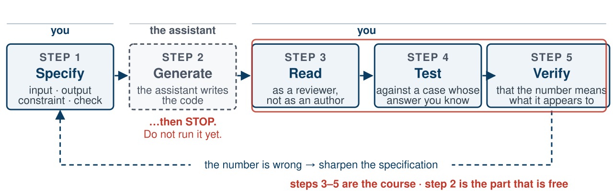
Four of the five steps are yours. The one an assistant does for you is the one that was never the hard part.
A usable specification names four things:
The task: prepare the housing features for a model. Written out, all four parts:
total_bedroomsColumnTransformer and
the transformed matrixcheck line is
step 4 written down in advance. Read the box, answer the
check in your head, then run the cell — and you have done the
whole loop with only the free step handed to you.
The dangerous moment is not the generation. It is the reflex to run it.
This is not caution for its own sake. In a domain where wrong code still returns a plausible number, running first destroys the only cheap opportunity to notice.
Five questions, asked in this order, every time:
fit and transform are different verbsNot “does it run”. Does it give the right answer on an input whose answer you can state independently?
The code is correct and the number is still misleading. This is the step nobody does.
Every one of the four is a question about evidence, not about code. That is the course.
Written examination — carries the mark
Oral examination — optional
Note what is absent: no marks for a notebook that runs. Evidence earns marks.
Because what you are learning is not typing. It is judgement about whether a result can be trusted — and you exercise that by reading: code you did not write, a metric, a curve. At a keyboard you can reach the right answer by running things until they look right. On paper you have to actually know.
train_test_split would be incoherent. Syntax errors in
handwritten code cost nothing; logic errors cost everythingbest = None
for a in [0.01, 0.1, 1, 10, 100]:
m = Ridge(alpha=a).fit(X_train, y_train)
s = root_mean_squared_error(y_test, m.predict(X_test))
if best is None or s < best[1]:
best = (a, s)
print(f"best alpha={best[0]}, test RMSE={best[1]:,.0f}")
1. Which object is the validation set?
The test set.
2. Too optimistic, too pessimistic, or neither?
(i) too optimistic.
Questions 3 and 4 — the repair, and whether the honest number is higher — are answered at the end of the next lecture, when you have the tools to answer them yourselves.
M for the deck menu, S for speaker notes,
C for the chalkboardGéron, Chapters 1–2
The thirty minutes just spent were the course itself, and this is the only lecture that carries them. Every other lecture opens with ten minutes of context and twenty of mathematics.
Part one
8 minutes
You are a data scientist at a real-estate investment company.
Your model predicts a district’s median housing price from the other metrics.
What exactly is the business objective?
Your model’s prediction is fed to another machine learning system, together with other signals, to decide whether a district is worth investing in.
Note the consequence: nobody downstream ever looks at your prediction. A component that quietly degrades inside a chain of components is not noticed by anyone — which is why the evidence has to come from you.
District prices are currently estimated manually by experts: a team gathers information and applies complex rules.
Remember this figure — and read it carefully. It is a relative criterion: 30% of the district’s price. In the next lecture we choose a metric measured in dollars, which is not the same thing, and we come back to this then.
It is also the stakeholder’s claim about their own team, not a measurement we made. We will treat it as an assumption and label it as one wherever it appears.
Before writing any code, answer four questions:
Pause here and answer them yourself before the next slide.
| Question | Answer | Because |
|---|---|---|
| Supervision | supervised | every district carries its expected output |
| Task | multiple, univariate regression | predict one value, from several features |
| Learning mode | batch, offline | no data stream, and 20,640 rows fit in memory |
Three answers, one minute. The fourth question is the one that can sink the project.
List and verify what everyone is assuming. This catches serious problems early.
We asked. They need the actual prices. We may proceed.
Part two
20 minutes · look, then split, then look properly
from pathlib import Path
import pandas as pd
import tarfile
import urllib.request
def load_housing_data():
tarball_path = Path("datasets/housing.tgz")
if not tarball_path.is_file():
Path("datasets").mkdir(parents=True, exist_ok=True)
url = "https://github.com/ageron/data/raw/main/housing.tgz"
urllib.request.urlretrieve(url, tarball_path)
with tarfile.open(tarball_path) as housing_tarball:
housing_tarball.extractall(path="datasets", filter="data")
return pd.read_csv(Path("datasets/housing/housing.csv"))
housing_full = load_housing_data()
Write a function, not a manual download: the data will change, and you will need this on another machine.
One row per district, ten attributes. Start with
head() and info(), always, before anything else.
>>> housing_full.info()
RangeIndex: 20640 entries, 0 to 20639
Data columns (total 10 columns):
# Column Non-Null Count Dtype
--- ------ -------------- -----
0 longitude 20640 non-null float64
1 latitude 20640 non-null float64
2 housing_median_age 20640 non-null float64
3 total_rooms 20640 non-null float64
4 total_bedrooms 20433 non-null float64
5 population 20640 non-null float64
6 households 20640 non-null float64
7 median_income 20640 non-null float64
8 median_house_value 20640 non-null float64
9 ocean_proximity 20640 non-null object
total_bedrooms has 20,433 non-null values, not
20,640.
207 districts are missing this feature.
>>> housing_full["ocean_proximity"].value_counts()
<1H OCEAN 9136
INLAND 6551
NEAR OCEAN 2658
NEAR BAY 2290
ISLAND 5
Repeated values from a small set: this is a categorical attribute, not free text.
Note ISLAND: five districts. Rare categories
will cause trouble later.
housing_full.describe()
count ignores nulls — that is why total_bedrooms
reads 20,433std is the standard deviation: how dispersed the values are25%, 50%, 75% are the quartiles and
the medianFor a bell-shaped distribution the 68–95–99.7 rule applies: about 68% of values fall within $1\sigma$ of the mean, 95% within $2\sigma$, 99.7% within $3\sigma$.
import matplotlib.pyplot as plt
housing_full.hist(bins=50, figsize=(12, 8))
plt.show()
A histogram shows how many instances fall in each value range. Four things should jump out.
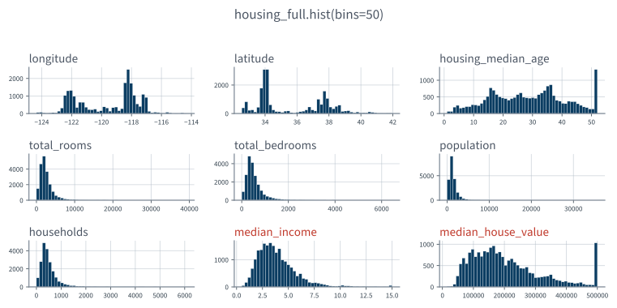
Take thirty seconds. What is wrong with the bottom two?
median_income ranges roughly 0.5 to 15. That is not a salary.
Preprocessed attributes are normal. Understanding how they were computed is not optional.
median_house_value is capped — and it is our
label.
Two honest fixes: collect proper labels for the capped districts, or remove them from both the training and the test set.
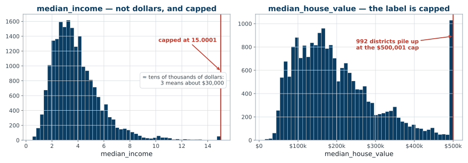
992 districts — nearly 5% of the data — have a label that is not their price. It is a ceiling.
total_rooms runs from 2 to 39,320.
median_income runs from 0.4999 to 15.0001.
Scaling is required for: gradient descent, regularised linear models (ridge, lasso), SVMs, $k$-nearest neighbours, $k$-means, PCA, neural networks. Anything that measures a distance, penalises a coefficient, or takes a step.
Scaling does nothing for: decision trees, random forests, and ordinary least squares. Trees split on one feature at a time, so any monotone rescaling gives the same tree; least squares is equivariant under an invertible affine map of the features — the fit is identical and the coefficients simply absorb the change.
All three models you build today are in the second list. It is also exactly why the scale-before-split leak will cost nothing here: an invertible affine map, applied to an estimator that does not care. The next lecture measures it, over twenty seeds.
They extend much further to the right of the median than to the left.
This makes patterns harder for some algorithms to detect. Later we will transform them toward something more symmetric — typically by taking a square root or a logarithm.
A feature following a power law is a good candidate for $\log$: districts of 10,000 people are ten times rarer than districts of 1,000, not exponentially rarer.
Four observations from four histograms, and we have not yet plotted one variable against another. That is exactly the moment to stop.
The only way to know how a model generalises is to try it on cases it has never seen.
Typically 80/20 — but with 10 million instances, holding out 1% is plenty.
Create the test set before you explore any further.
from sklearn.model_selection import train_test_split
train_set, test_set = train_test_split(housing_full, test_size=0.2,
random_state=42)
Purely random sampling is fine if the dataset is large enough relative to the number of attributes.
Ours may not be. Random sampling risks significant sampling bias.
Surveyors do not call 1,000 people at random. They ensure the sample is representative of the population on the dimensions that matter.
Experts tell us median income predicts price. So our test set must be representative across income levels.
import numpy as np
housing_full["income_cat"] = pd.cut(housing_full["median_income"],
bins=[0., 1.5, 3.0, 4.5, 6., np.inf],
labels=[1, 2, 3, 4, 5])
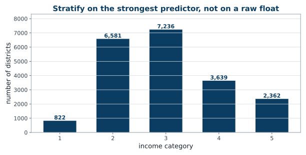
The bins are chosen so that no stratum is too small to sample from. Category 1 has 822 districts — enough.
strat_train_set, strat_test_set = train_test_split(
housing_full, test_size=0.2,
stratify=housing_full["income_cat"], random_state=42)
for set_ in (strat_train_set, strat_test_set):
set_.drop("income_cat", axis=1, inplace=True)
The stratified test set has income proportions almost identical to the full dataset. The purely random one is visibly skewed.
Not too many strata, and each stratum large enough — or the estimate of a stratum’s importance is itself biased.
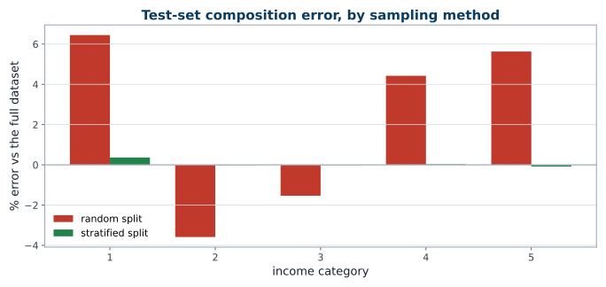
Random split: up to 6.4% off. Stratified: up to 0.36% off. Roughly eighteen times better, for one keyword argument.
assert len(strat_train_set) + len(strat_test_set) == 20640
assert set(strat_train_set.columns) == set(strat_test_set.columns)
assert strat_train_set.index.intersection(strat_test_set.index).empty
Three lines: nothing was dropped, the two frames have the same columns, and no district is in both. Each one has been a real bug in a real notebook.
Reviewer question 4 — what was dropped? — answered by the program instead of by you.
housing = strat_train_set.copy() # 16,512 districts. The other 4,128
# are sealed until the last slide of
# the next lecture.
Everything from here to the end of this part is computed on
housing. Every correlation, every scatter, every ratio.
strat_train_set by accident. And
so that the numbers on the next eight slides are honestly labelled: they are
training-set numbers, and they will differ slightly from
anything you compute on all 20,640 rows.
housing.plot(kind="scatter", x="longitude", y="latitude", grid=True)
plt.show()
It looks like California. Beyond that, nothing is visible.
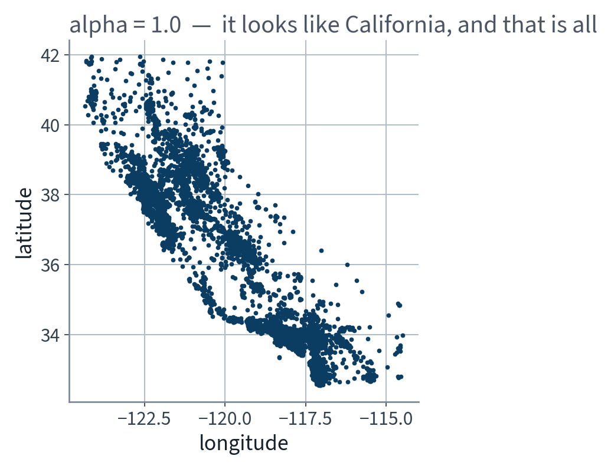
California. And nothing else — the ink is saturated.
housing.plot(kind="scatter", x="longitude", y="latitude",
grid=True, alpha=0.2)
plt.show()
Now the high-density areas appear: the Bay Area, Los Angeles, San Diego, and the Central Valley around Sacramento and Fresno.
Our brains are excellent at spotting patterns in pictures. Expect to tune plotting parameters until the pattern shows.
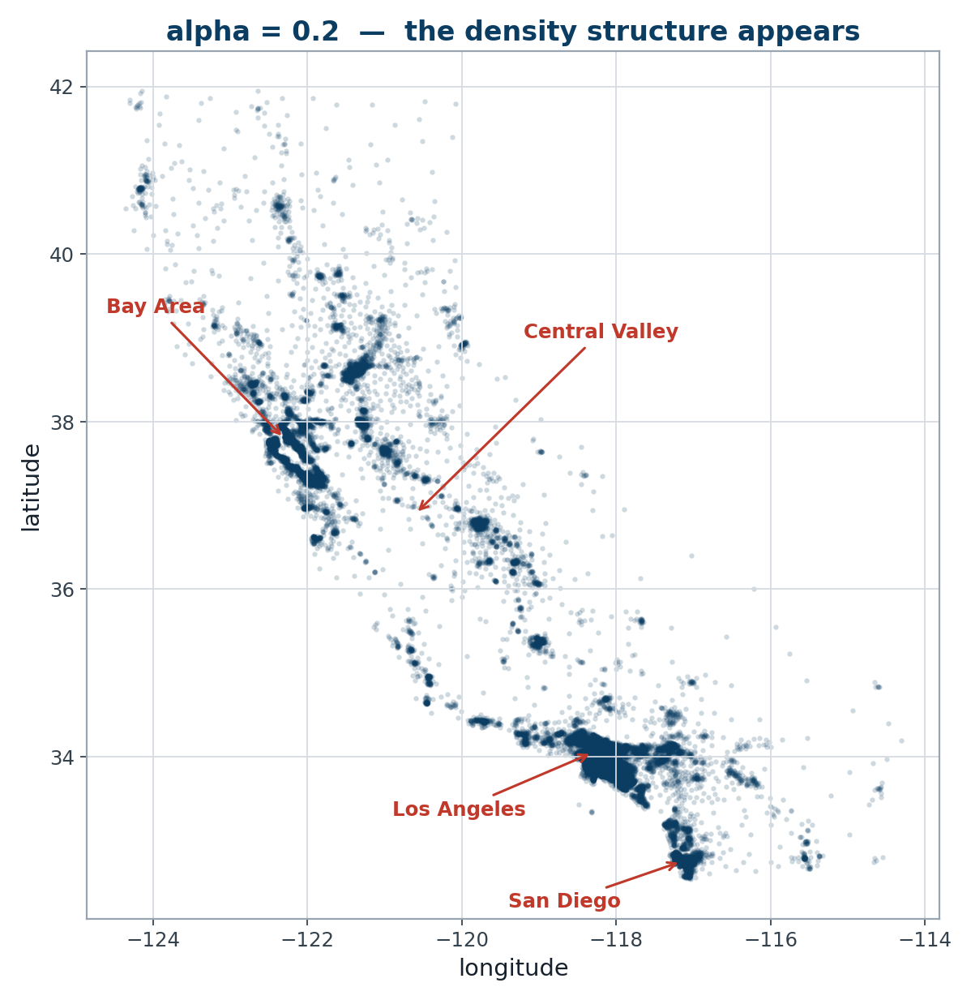
One keyword argument. Same data, and now you can see the population of a state.
housing.plot(kind="scatter", x="longitude", y="latitude", grid=True,
s=housing["population"] / 100, label="population",
c="median_house_value", cmap="jet", colorbar=True,
legend=True, sharex=False, figsize=(10, 7))
plt.show()
Radius encodes population, colour encodes price.
Prices are strongly related to location and population density. A clustering algorithm should be useful here — we will come back to that idea.
One line in that cell is worth arguing with, and we will — in the next slide but one.
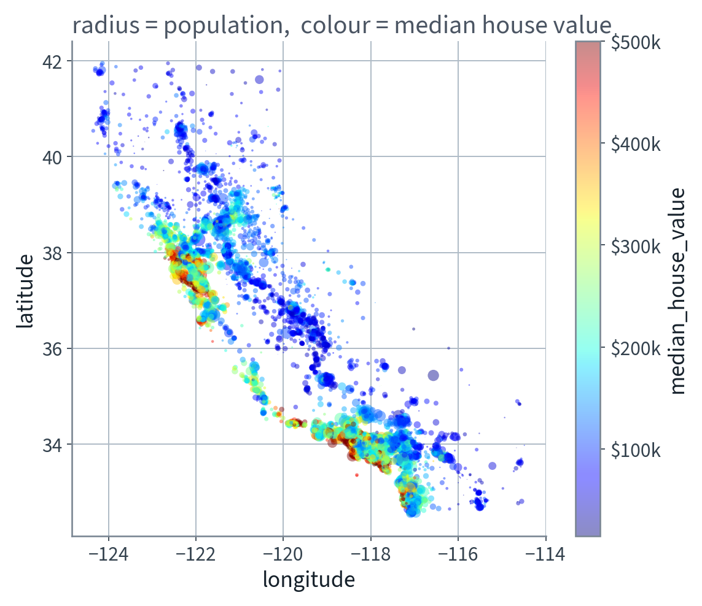
Red on the coast, blue inland. The model does not know what “coast” means — but it will learn longitude.
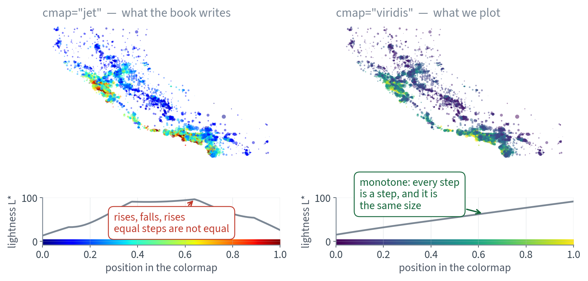
cmap="jet" ran, produced something
colourful, and is wrong.
A colour scale is a claim that equal steps in the data look like equal steps on the screen. The bottom row of that figure is that claim, tested: it plots each colormap's lightness against position.
| Colormap | Lightness range | Largest reversal | Verdict |
|---|---|---|---|
jet | 83.0 | 1.06 | rises, falls, rises |
turbo | 78.9 | 0.87 | better, still not monotone |
viridis | 75.9 | 0.00 | every step is a step |
So jet invents bands the data does not have,
buries detail in its yellow, and for the 8% of men with a red–green
deficiency it reverses rank order outright. Photocopy it and it stops being a
scale at all.
>>> corr_matrix = housing.corr(numeric_only=True)
>>> corr_matrix["median_house_value"].sort_values(ascending=False)
median_house_value 1.000000
median_income 0.688380
total_rooms 0.137455
housing_median_age 0.102175
households 0.071426
total_bedrooms 0.054635
population -0.020153
longitude -0.050859
latitude -0.139584
Pearson’s $r$ ranges from $-1$ to $+1$. Income dominates.
These are training-set values. Compute them on all 20,640 rows and the third decimal moves — which is why a number is worth nothing without the set it was measured on.
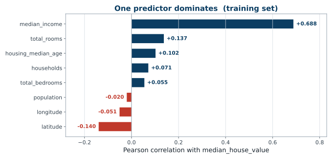
One bar is five times the next. That is the feature we already stratified on — on the experts’ word, before we had looked. The measurement says they were right.
$r$ measures linear correlation only.
housing.plot(kind="scatter", x="median_income", y="median_house_value",
alpha=0.1, grid=True)
plt.show()
A horizontal stripe means many districts share one exact price. That is a property of the table, not of California, so it is countable.
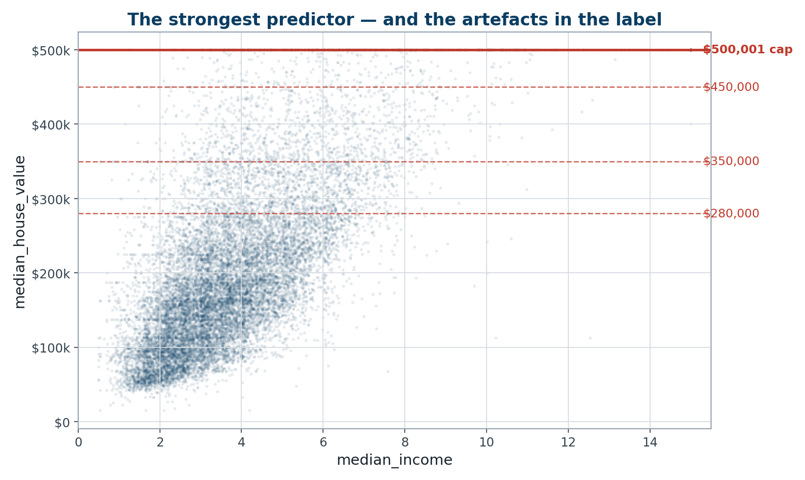
The trend is real. The stripes are not: every one sits on a multiple of $12,500.
A well-known description of this dataset names three fainter lines. We counted them in our own training split.
| Value | Districts | Verdict |
|---|---|---|
| $350,000 | 62 | real — 21× the background |
| $450,000 | 31 | marginal |
| $280,000 | 3 | indistinguishable from background |
A typical price is shared by 3 districts, so the last one is not a line at all. Meanwhile the five commonest values below the cap — $137,500, $162,500, $112,500, $187,500, $225,000 — go unmentioned, and they are the strongest stripes in the plot.
housing["rooms_per_house"] = housing["total_rooms"] / housing["households"]
housing["bedrooms_ratio"] = housing["total_bedrooms"] / housing["total_rooms"]
housing["people_per_house"] = housing["population"] / housing["households"]
| Attribute | Correlation with price |
|---|---|
| median_income | 0.688 |
| rooms_per_house | 0.144 |
| total_rooms | 0.137 |
| bedrooms_ratio | −0.256 |
bedrooms_ratio is far more informative than
either raw count.
Collinearity causes real problems for some models — linear regression above all.
In the next lecture we will see exactly why, when we derive the normal equation.
pd.cut — and see what happens to the sampling
bias table. Two lines, and it is the whole argument of the stratification
section.
Not presented — for afterwards
five, in the style of the written paper
Solutions on Lecture 2’s deck.
Solutions on Lecture 2’s deck.
Lecture 2 · Géron Ch. 2
Least squares and the normal equation — and why you avoid
weighted sums of existing features
Pipelines, ColumnTransformer, cross-validation, grid search
Choosing RMSE or MAE, and the final evaluation on the sealed test set
Run the Lecture 1 notebook first